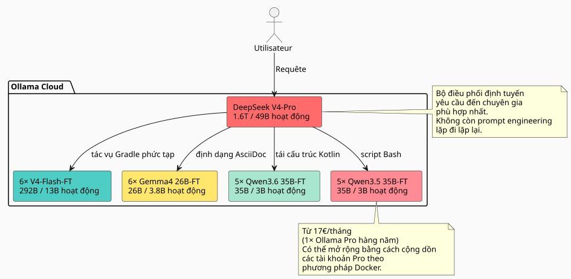

Hiệu quả gấp 27× đến 45× so với Claude và GPT: cách một đội ngũ 23 chuyên gia AI được fine-tune nghiền nát thị trường
Đăng ngày 11 May 2026
Khi sử dụng LLM cho việc phát triển phần mềm hàng ngày, chúng ta luôn kết thúc bằng việc vấp phải cùng một rào cản: mô hình không biết codebase của bạn. Nó không biết rằng bạn đang sử dụng pattern mẫu củahttps://fr.wikipedia.org/wiki/Graphe_orient%C3%A9_acyclique[DAG], quy ước Gradle như vậy, phân tầng nhận thức trong cáchttps://fr.wikipedia.org/wiki/AsciiDoc[.adoc]Vì vậy, chúng ta cung cấp thêm ngữ cảnh cho nó, lặp lại, sửa lỗi, và thử nghiệm nhiều lần. Và thời gian — cùng tiền bạc — cứ thế trôi đi.
Vì vậy, tôi đã đặt câu hỏi một cách trực diện: chi phí cho một nhóm các mô hình được fine-tune trên workspace của tôi, có khả năng viết mã theo phong cách của tôi mà không cần phải giải thích lại mỗi lần, là bao nhiêu? Và quan trọng hơn: phương pháp này so với các giải pháp độc quyền thông thường — Claude, GPT, Gemini, Grok — thì như thế nào?
Câu trả lời khiến tôi ngạc nhiên. Ít hơn nhiều so với những gì tôi tưởng tượng. Và tỷ lệ chi phí/hiệu quả so với các ông lớn trong ngành là không tưởng. Dưới đây là chi tiết đầy đủ.
Vấn đề là: tại sao lại là fine-tune mà không phải là RAG?
RAG thì tốt. knowledge graph của tôi và phân vùng tri thức của tôi hoạt động hiệu quả. Nhưng RAG có một khuyết điểm cơ bản: với mỗi truy vấn, bạn phải tái chèn ngữ cảnh liên quan. Prompt của bạn dài ra, độ trễ tăng vọt, và mô hình không bao giờ nội hóa được các pattern của bạn — nó luôn đọc chúng như một tài liệu bên ngoài trong mỗi lần thực hiện.
Còn fine-tune chính là trí nhớ cơ bắp. Mô hình biết rằng bạn đang viết`build.gradle.kts`với các tác vụ được ghi lại thông qua`tasks.register`, rằng bạn`AGENTS.adoc`tuân theo một cú pháp chuẩn hóa, rằng workspace của bạn được cấu trúc theo các borough. Nó không cần chúng ta phải nhắc lại.
|
Fine-tuning không phải là sự thay thế cho RAG. Đó là một lớp bổ trợ. RAG vẫn phù hợp cho những dữ liệu thay đổi thường xuyên (logs, tickets, các commit gần đây). Fine-tuning dành cho kiến thức cấu trúc và phong cách dài hạn. |
Ý tưởng: một đội ngũ chuyên gia, không phải một mô hình duy nhất
Một mô hình duy nhất được fine-tune trên toàn bộ workspace của tôi là đã tốt rồi. Nhưng điều đó vẫn chưa tối ưu. Workspace của tôi bao gồm nhiều lĩnh vực rất khác nhau:
-
Các plugin Gradle (Kotlin, convention plugins, composite builds)
-
Công cụ DAG (Kotlin, lập kế hoạch, thực thi)
-
Các Agent LLM (Python, LangChain4j, RAG)
-
Tài liệu kiến trúc (AsciiDoc, quản trị)
-
Infra/DevOps (Docker, GitHub Actions, CI/CD)
Một mô hình duy nhất có thể sẽ ổn ở mọi nơi, nhưng không xuất sắc ở bất kỳ đâu. Giải pháp là? Mộtđội ngũ các mô hình chuyên biệt, với một bộ điều phối định tuyến mỗi yêu cầu đến chuyên gia phù hợp.

Tổng đội tàu:1 người điều phối + 22 chuyên gia = 23 mô hình. Và chi phí suy luận hàng tháng thì sao?17€/thángmột gói đăng ký Ollama Pro hàng năm — có thể mở rộng bằng cách cộng dồn các tài khoản nếu vượt quá hạn mức, như đã trình bày trong phương pháp Docker đa tài khoản của tôi. Bắt đầu từ 17€, thêm 20€ cho mỗi mức tùy theo nhu cầu thực tế. Không gây lãng phí.
Soi xét codebase: 7 900 tệp, 144 000 dòng
Trước khi ước tính chi phí training, cần phải biết cần training cái gì. Tôi đã kiểm tra workspace của mình bằng cách loại trừ nghiêm ngặt tất cả những gì bị Git bỏ qua:
----
build/ out/ node_modules/ runtimes/ .gradle/ dist/
target/ venv/ __pycache__/ .cache/ .tox/
----
Đây là kết quả chỉ dành cho các tệp được track:
[cols="2,2"]
|===
|Số liệu đo lường |Giá trị
|Các tệp nguồn được theo dõi |**7 896** |Số dòng mã (LOC) |**143 805** |Kho lưu trữ Git |**26** |Các ngôn ngữ chính |Kotlin (1 903), AsciiDoc (2 765), Python (5 029)
|===
[IMPORTANT]
====
Hơn 5 000 tệp Python này bao gồm các`runtimes/`các notebook và script tiện ích. Phần cốt lõi của ứng dụng (plugins Gradle, công cụ DAG, agent) chủ yếu được viết bằng Kotlin và AsciiDoc.
====
Từ khối lượng này, tôi ước tính có thể tạo ra một tập dữ liệu tổng hợp gồm**~170 triệu token**thông qua một LLM hướng dẫn (chưng cất codebase thành các cặp hướng dẫn/phản hồi).
=== Chi tiết tập dữ liệu theo loại chuyên gia
[source,text]
----
Dataset maître (généraliste V4-Flash) : 50M tokens
Expert Gradle/Build : 15M tokens
Expert Kotlin/DAG : 15M tokens
Expert AsciiDoc/Gouvernance: 15M tokens
Expert Agent/LLM/Python : 15M tokens
Expert Infra/CI-CD : 15M tokens
Micro-experts Qwen/Gemma : ~5M tokens chacun
----
== Lựa chọn các mô hình: 100% MoE, không dense
Đó là lúc kiến trúc trở nên thực sự hiệu quả.
Một mô hình *dense* kích hoạt tất cả các trọng số của nó cho mỗi token. Một mô hình *MoE* (Mixture of Experts) chỉ kích hoạt một phần nhỏ các tham số của nó. Chi phí suy luận — và tinh chỉnh (fine-tuning) — tỷ lệ thuận với các tham số**được kích hoạt**, không phải vào các cài đặt**được lưu trữ**Vì bạn không cung cấp văn bản cần dịch, vui lòng gửi nội dung tiếng Pháp mà bạn muốn chuyển sang tiếng Việt.
Hãy cùng xem thị trường hiện nay cung cấp những gì về MoE trên Ollama Cloud:
[cols="3,2,2,1,3"]
|===
|Mẫu |Tổng số tham số |Đã kích hoạt |Kích hoạt |Ollama Cloud
|DeepSeek V4-Pro |1.6T |49B |3.1% |✅ bản địa |DeepSeek V4-Flash |292B |13B |4.5% |✅ bản địa |Gemma 4 26B-A4B |26B |3,8 tỷ |14.6% |✅ bản địa |Qwen3.6-35B-A3B |35B |3B |8.6% |❌ (chưa được tích hợp) |Qwen3.5-35B-A3B |35B |3B |8.6% |✅ bản địa
|❌ Qwen3.5-27B |27B |27B |mật độ 100% |loại bỏ |❌ Qwen3.5-4B/9B |4B/9B |4B/9B |mật độ 100% |loại bỏ |❌ Gemma 4 31B |31B |31B |mật độ 100% |loại bỏ
|🧪 Gemma 4 E2B/E4B |5B/8B |5B/8B |mật độ 100% |quy trình xác thực
|===
[CAUTION]
====
Tỷ lệ kích hoạt là tiêu chí phân biệt. Một Gemma 4 26B-A4B chỉ kích hoạt 3.8B trong số 26B tham số của nó — ít hơn 7 lần so với một mô hình dense 27B, nhưng mang lại hiệu suất coding agent tương đương (77.1% so với 80% trên LiveCodeBench v6).
====
=== Tại sao tôi từ bỏ các mô hình dense
Ngoại lệ: Gemma 4 E2B và E4B. Hai mô hình này, theo giấy phép Apache 2.0, là lựa chọn hoàn hảo để thử nghiệm và xác thực pipeline training với chi phí thấp hơn. Một lần chạy 2-3 giờ trên E2B tốn chưa đến $5 — nếu tập dữ liệu hoặc siêu tham số có vấn đề, chúng ta sẽ biết ngay chỉ với vài đô la. Khi pipeline đã vận hành trơn tru, chúng thậm chí có thể được dùng cho các siêu vi nhiệm vụ (định dạng lại đơn giản, phân loại nhị phân). Nhưng đối với các chuyên gia về đội hình chính, tôi vẫn chọn MoE. Đây là lý do tại sao:
.Nhưng không chỉ dừng lại ở đó: các phiên bản Gemma 4 E2B/E4B, những chuyên gia về ẩn danh hóa chi tiết
[NOTE]
====
Google đã thiết kế các mô hình nhỏ này để có khả năng cạnh tranh trong việc gọi công cụ (tool calling) nguyên bản — chúng biết cách gọi hàm, xử lý regex, tìm kiếm các mẫu. Một khi được fine-tune trên các ví dụ ẩn danh hóa (email, token, UUID, đường dẫn tệp tin), chúng trở thành những**trình ẩn danh hóa bộ dữ liệu**siêu nhanh. Chúng ta đưa cho chúng một khối văn bản thô, chúng gọi`sed`/`regex`thông qua một tool call và trả về khối đã được làm sạch. Chi phí suy luận là rất thấp: với 5B tham số được kích hoạt, nó có thể chạy trên một GPU phân khúc phổ thông duy nhất. Những mô hình này không phải là các chuyên gia trong lĩnh vực — chúng là những**công nhân lành nghề**trong chuỗi sản xuất tập dữ liệu.
====
* VRAM huấn luyện của nó (ngay cả với QLoRA) tỉ lệ thuận với các**Tổng cộng 27B**
* Thời gian huấn luyện của nó tỷ lệ thuận với các**27B đã kích hoạt**
Hãy so sánh với một Qwen3.6-35B-A3B (MoE):
[cols="3,2,2,2"]
|===
| |Qwen3.5-27B (dense) |Qwen3.6-35B-A3B (MoE) |Tỷ lệ
|VRAM QLoRA |~55 GB |~35 GB |1.6× |giờ GPU (8M tok) |~12 giờ |~4 giờ |**3×** |Chi phí cho mỗi lần fine-tune |~$24 |~$8 |**3×** |SWE-bench Đã xác minh |75.0% |73.4% |có thể so sánh được
|===
MoE có chi phí huấn luyện thấp hơn 3 lần với hiệu suất agent-coding chênh lệch khoảng 5%. Với 22 chuyên gia, khoảng cách này lên tới hàng nghìn euro.
== Ước tính huấn luyện: 811 H100-giờ
Tôi đã phân bổ chi phí huấn luyện theo từng mô hình, sử dụng QLoRA 4-bit, với các bộ dữ liệu đã mô tả ở trên.
=== Các Micro-experts MoE nhẹ (3-3.8B được kích hoạt)
Các mô hình này yêu cầu 1 H100 (80 GB) cho mỗi lần chạy. VRAM của mô hình ở định dạng Q4 là khoảng 13-18 GB, để lại nhiều khoảng trống cho các trạng thái tối ưu hóa LoRA và các activation.
[cols="4,2,3,2"]
|===
|Mẫu |Số lần chạy |GPU-h/run |Tổng số GPU-h
|Gemma 4 26B-A4B-FT |6 |3.5 h |**21 h** |Qwen3.6-35B-A3B-FT |5 |4.0 h |**20 h** |Qwen3.5-35B-A3B-FT |5 |4.0 h |**20 giờ** |*Tổng phụ micro* | | |*61 h*
|===
=== Exécutifs V4-Flash (13B được kích hoạt / 292B được lưu trữ)
DeepSeek V4-Flash là một trường hợp đặc biệt. Mặc dù chỉ có 13B được kích hoạt cho mỗi token, nhưng mô hình đầy đủ ở định dạng Q4 nặng ~142 GB — tất cả các chuyên gia phải nằm trong VRAM trong quá trình training. Do đó, cần phải**3× H100**mỗi lượt chạy để thoải mái.
[cols="4,2,3,3,2"]
|===
|Mẫu |Bộ dữ liệu |GPU |Giờ |Tổng số GPU-h
|V4-Flash-Base tổng quát |50M tok |3× H100 |50 h |**150 h** |Chuyên gia V4-Flash ×5 |15M tok |3× H100 |40 h |**600 h** |*Tổng cộng cấp điều hành* | | | |*750 h*
|===
[cols="3,2,1"]
|===
|**TỔNG CỘNG** | |**811 H100-h**
|===
[NOTE]
====
Để so sánh, một bản full fine-tune của V4-Flash (không có QLoRA, tất cả các trọng số) sẽ tốn khoảng ~4 000 H100-h chỉ riêng cho 6 mô hình. QLoRA giúp giảm chi phí xuống 5 lần. Đây là cách duy nhất để khiến dự án khả thi về mặt kinh tế ở quy mô này.
====
=== Giá thuê GPU: ai cho thuê gì vào tháng 5 năm 2026
Tôi đã benchmark các đơn vị cho thuê H100 chính. Giá niêm yết, cho 811 giờ.
[cols="3,2,2,2"]
|===
|Người cho thuê |$/H100·h |Tổng cộng 811h |Độ tin cậy
|**Vast.ai spot** |$1.60 |**$1 298** |★★☆ có thể ngắt quãng |**Crusoe Cloud** |$2.00 |**$1 622** |★★★★ trung tâm dữ liệu đáng tin cậy |FluidStack |$1.98 |$1 606 |Vui lòng cung cấp văn bản cần dịch. |TensorDock |$1.80 |$1 460 |★★☆ |RunPod |$2.29 |$1 857 |★★★ sự thỏa hiệp tốt |CoreWeave |$2.25 |$1 825 |★★★★ doanh nghiệp |Lambda Labs |$2.49 |$2 019 |★★★★ cao cấp
|===
[TIP]
====
Vast.ai spot là rẻ nhất nhưng các lượt chạy của bạn có thể bị ngắt bất cứ lúc nào. Đối với việc training, điều này khá rủi ro. Crusoe với giá $2.00/h là lựa chọn có tỷ lệ tin cậy/giá thành tốt nhất. Khoản chi phí tăng thêm $324 so với Vast là xứng đáng để đổi lấy sự an tâm.
====
=== Wall-clock : mất bao lâu để huấn luyện tất cả?
Với một nút đơn 3× H100, 31 lượt chạy (1 tổng quát + 30 chuyên gia) mất khoảng**12 ngày**theo trình tự. Nếu bạn thuê 2 nút song song, nó sẽ giảm xuống còn**6 ngày**Vui lòng cung cấp văn bản tiếng Pháp cần dịch.
Trên thực tế, các micro-expert có thể chạy trên các nút riêng biệt (mỗi nút 1 H100) trong khi các V4-Flash chiếm nút 3× H100. Với một kế hoạch điều phối thông minh:Nœud A (3× H100) : V4-Flash généraliste → V4-Flash experts ×5 (11 jours) Nœud B (1× H100) : Gemma 4 26B ×6 → Qwen 36 ×5 → Qwen 35 ×5 (6 jours)
7 ngày thuê, tất cả đã hoàn tất.
Suy luận: 23 mô hình trên Ollama Cloud chỉ từ 17€/tháng
Đây là phần tinh tế nhất của kiến trúc.
Ollama Cloud cho phép tải lên các mô hình riêng tư (tính năng của gói Pro). 22 mô hình fine-tuned của tôi được đẩy lên`.gguf`trên không gian Ollama của tôi, được đánh dấu là riêng tư và có thể truy cập thông qua API tiêu chuẩn.

Chúng ta bắt đầu với mức 17€/tháng, rồi scale nếu cần
Gói Pro của Ollama (17€/tháng khi thanh toán theo năm) cho phép sử dụng 3 mô hình cloud đối thủ. Trong kiến trúc này, tôi không bao giờ cần nhiều hơn 2-3 chuyên gia cùng lúc:
-
Giai đoạn phân loại (V4-Pro) chiếm 1 slot, mất vài giây
-
Chuyên gia được chọn chiếm 1 slot, trong thời gian tạo câu trả lời của họ
-
Slot thứ 3 vẫn được dự phòng cho các tác vụ song song
Nếu mức độ sử dụng tăng lên, tôi sẽ thêm các tài khoản Pro bổ sung thông qua phương pháp Docker được mô tả trong bài viết của tôi về việc cộng dồn các gói đăng ký. Không cần gói Max giá 100€/tháng — tôi chỉ thêm những gì tôi thực sự cần.
Yếu tố hạn chế duy nhất làhạn ngạch thời gian GPUhàng tháng của Ollama (gói Pro gấp 50 lần gói miễn phí). Với nhu cầu sử dụng vài trăm yêu cầu mỗi ngày của tôi, mức này là quá đủ.
|
Chi phí biên của một lượt gọi đến V4-Pro (49B được kích hoạt) so với Gemma 4 26B-A4B (3.8B được kích hoạt) làngay cả với tôi: bằng không. Đó là gói Ollama sẽ hấp thụ phần chênh lệch về compute. Chỉ số duy nhất của tôi là độ trễ. |
Định tuyến trong thực tế
----
Volume de requêtes estimé : ~500/jour
├─ 50% → Gemma 4 26B-A4B-FT (micro, 3.8B actifs)
│ Formatage AsciiDoc, scripts simples, conventions nommage
│
├─ 25% → V4-Flash-FT (exécutif, 13B actifs)
│ Plugins Gradle, refactoring Kotlin, génération DAG
│
├─ 15% → Qwen 35B MoE-FT (micro, 3B actifs)
│ Tâches intermédiaires, review de code, documentation
│
└─ 10% → V4-Pro (orkestrateur, 49B actifs)
Décisions architecturales, refactoring transverse,
problèmes vraiment nouveaux
----
Phần lớn lưu lượng truy cập đi qua các mô hình nhỏ. Mô hình lớn chỉ can thiệp như là phương án cuối cùng.
== Sự so sánh gây đau đớn: Claude, GPT, Gemini, Grok đối đầu với đội hình của tôi
Đây là nơi khoảng cách trở nên chóng mặt. Hãy cùng xem cùng một khối lượng công việc (500 yêu cầu/ngày, trung bình ~300 token đầu vào + 2.000 token đầu ra) sẽ tốn bao nhiêu chi phí với các giải pháp độc quyền trên thị trường vào tháng 5 năm 2026.
=== Anthropic — Claude (biểu giá tháng 5 năm 2026)
Anthropic gần đây đã *giảm* giá. Áp lực từ các giải pháp open-weight như DeepSeek và Qwen đang ngày càng hiện rõ.
[cols="3,2,2,2,2"]
|===
|Mô hình |$/MTok |$/MTok |Chi phí/ngày |**Chi phí/tháng**
|Opus 4.7 (thông minh nhất) |$5 |$25 |$25.75 |**$772** |Sonnet 4.6 (cân bằng) |$3 |$15 |$15.45 |**$463** |Haiku 4.5 (nhanh nhất) |$1 |$5 |$5.15 |**$154**
|===
[CAUTION]
====
Những mức giá này là *sau* đợt giảm giá gần nhất của Anthropic (tháng 5 năm 2026). Trước đó, Opus có giá $15/$75 mỗi MTok. Nỗi sợ về open-weight là có thật.
====
Ngay cả mô hình rẻ nhất của Claude — Haiku 4.5 tại**154€/tháng**— đắt gấp 9 lần gói đăng ký Ollama Pro 17€ của tôi. Và Haiku không biết codebase của tôi, không tạo nội dung theo phong cách của tôi, và đòi hỏi phải thực hiện prompt engineering một cách hệ thống.
Mô hình thông minh nhất — `Opus 4.7` — làm bùng nổ ngân sách tại**772€/tháng**cho một lượng khiêm tốn là 500 yêu cầu mỗi ngày. Tức là**đắt hơn 45 lần**hơn là giải pháp của tôi.
=== OpenAI — GPT (giá cước tháng 5 năm 2026)
[cols="3,2,2,2,2"]
|===
|Mẫu |$/MTok |$/MTok |Chi phí/ngày |**Chi phí/tháng**
|GPT 5.5 (thông minh nhất) |$5 |$30 |$30.90 |**$927** |GPT 5.4 (tiêu chuẩn) |$2.50 |$15 |$15.45 |**$463** |GPT 5.4 Mini |$0.75 |$4.50 |$4.64 |**$139**
|===
Ngay cả mô hình "tiết kiệm" của OpenAI — GPT 5.4 Mini với giá 139€/tháng — cũng đắt gấp 8 lần gói đăng ký của tôi, cho một mô hình không biết *bất cứ điều gì* về các quy ước của tôi và đòi hỏi kỹ thuật prompt engineering nặng nề.
GPT 5.5, sản phẩm chủ lực của họ:**927€/tháng**. Để thực hiện *zero-shot* trên codebase của tôi. Với 2-3 lần lặp cho mỗi tác vụ do phong cách không được kiểm soát, chi phí hàng tháng thực tế dễ dàng tăng gấp đôi.
=== Google — Gemini (giá cước tháng 5 năm 2026)
[cols="3,2,2,2,2"]
|===
|Mô hình |$/MTok |$/MTok |Chi phí/ngày |**Chi phí/tháng**
|Gemini 3.1 Pro (Cao) |$3.50 |$17.50 |$18.00 |**540$** |Gemini 3.1 Pro |$2 |$10 |$10.30 |**$309** |Gemini 3 Flash |$0.30 |$1.50 |$1.54 |**$46**
|===
Gemini 3 Flash với giá 46€/tháng là có tính cạnh tranh về giá thuần túy — nhưng nếu không có fine-tune, nó sẽ tạo ra mã "chung chung". Không phải là mã *Cheroliv*.
=== Grok — xAI (giá cước tháng 5 năm 2026)
[cols="3,2,2,2,2"]
|===
|Mẫu |$/MTok |$/MTok |Chi phí/ngày |**Chi phí/tháng**
|Grok 4 |$4 |$16 |$16.48 |**$494** |Grok 4 Mini |$0.80 |$3.20 |$3.30 |**$99**
|===
=== Microsoft — Azure OpenAI (giá tháng 5 năm 2026)
Azure áp dụng mức giá tương tự như API OpenAI trực tiếp, nhưng tính thêm phí cơ sở hạ tầng và mạng. Cần tính đến chi phí tăng thêm khoảng 10-20% cho dịch vụ quản lý (managed service).
[cols="3,2,2,2,2"]
|===
|Mẫu |$/MTok |$/MTok |Chi phí/ngày |**Chi phí/tháng**
|GPT 5.4 (Azure, Global) |$2.50 |$15 |$15.45 |**463$** |GPT 5.4 + cơ sở hạ tầng |chi phí tăng thêm 15% |chi phí bổ sung 15% |$17.77 |**533$**
|===
[NOTE]
====
Các mức giá trên dành cho API, không phải cho các gói đăng ký "chat" (Claude Pro 20$/tháng, ChatGPT Plus 20$/tháng). Ở đây chúng ta đang so sánh mức độ sử dụng của *nhà phát triển*, nơi bạn thực hiện liên tiếp hàng trăm yêu cầu mỗi ngày thông qua API để tạo, tái cấu trúc (refactor) hoặc viết tài liệu. Các gói đăng ký cho người dùng phổ thông có hạn mức sẽ bị hết nhanh hơn nhiều trước khi chạm mốc 500 yêu cầu/ngày.
====
=== Bảng so sánh cuối cùng
[cols="3,2,2,2,2,2"]
|===
|Giải pháp |Kiến thức codebase |Phong cách tích hợp |Chi phí/tháng |Vòng lặp |**Chi phí thực tế**
|**Đội ngũ của tôi (Ollama Pro)** |✅ Đã tinh chỉnh |✅ Trong trọng số |**17€** |0-1 |**17€** |Claude Opus 4.7 |❌ Zero-shot |❌ Prompt cần thiết |$772 |2-3 |$1 500-2 300 |Claude Haiku 4.5 |❌ Zero-shot |❌ Prompt cần thiết |$154 |3-4 |$460-615 |GPT 5.5 |❌ Zero-shot |❌ Prompt cần thiết |$927 |2-3 |$1 854-2 781 |GPT 5.4 |❌ Zero-shot |❌ Prompt cần thiết |$463 |2-3 |$925-1 390 |GPT 5.4 Mini |❌ Zero-shot |❌ Prompt cần thiết |$139 |3-5 |$417-695 |Gemini 3.1 Pro High |❌ Zero-shot |❌ Prompt cần thiết |$540 |2-3 |$1 080-1 620 |Grok 4 |❌ Zero-shot |❌ Prompt cần thiết |$494 |2-3 |$988-1 482 |**Azure GPT 5.4** |❌ Zero-shot |❌ Prompt cần thiết |$533 |2-3 |$1 066-1 600
|===
[plantuml, cost-comparison, svg]
----
@startuml
skinparam backgroundColor #FAFAFA
title Tỷ lệ chi phí/hiệu quả — đội ngũ của tôi so với thị trường (tháng 5 năm 2026)
rectangle "17€/tháng" as OURS #4ECDC4
rectangle "Opus 4.7\n772€" as OPUS #FF6B6B
rectangle "Sonnet 4.6\n463€" as SONNET #FF8B94
rectangle "GPT 5.5\n927€" as GPT #FFD93D
rectangle "Gemini 3.1 Pro\n540€" as GEMINI #6C5CE7
rectangle "Grok 4\n494€" as GROK #A8E6CF
rectangle "Haiku 4.5\n154€" as HAIKU #DFE6E9
rectangle "GPT 5.4 Mini\n139€" as MINI #B2BEC3
note bottom of OURS
Tích hợp fine-tune.
Không cần prompt engineering.
Hơn 90% chính xác ngay lần đầu.
end note
@enduml
----
17€/tháng cho 23 chuyên gia AI được fine-tun. Bản flagship Claude Opus 4.7 có giá**đắt hơn 45 lần**cho chất lượng thấp hơn trên codebase *của tôi*. GPT 5.5 tốn**đắt hơn 54 lần**. Ngay cả mô hình rẻ nhất trên thị trường (Gemini Flash với giá 46€) cũng tốn**2.7× cộng**mà không biết về workspace của tôi.
Phán quyết là không thể thay đổi: việc fine-tune trên các kiến trúc MoE vào năm 2026 không chỉ đơn thuần là "rẻ hơn". Đó là một nhân tố hiệu quả về**27× đến 54×**về tỷ lệ chi phí/chất lượng so với các giải pháp độc quyền. Anthropic, OpenAI, Google — tất cả họ đều biết điều đó, và đó là lý do tại sao họ đang hoảng loạn hạ giá.
== Hệ số hiệu quả: 5-8× so với việc sử dụng `V4-Pro` một mình
Hãy so sánh hai cực đối lập.
=== Kịch bản A: Chỉ dùng V4-Pro cho tất cả mọi thứ
[cols="3,2"]
|===
|Số đo |Giá trị
|Kiến thức về codebase |0 (zero-shot) |Quy ước đặt tên |40-60% chính xác ngay lần đầu |Cần thiết phải kỹ thuật hóa prompt (prompt engineering) |Vâng, có hệ thống |Số lần lặp mỗi tác vụ |2-3 |Chi phí suy luận |$100/tháng (Ollama Max) |Độ trễ trung bình |~20 tok/s + mạng
|===
=== Kịch bản B: Đội hình MoE được điều phối
[cols="3,2"]
|===
|Số liệu đo lường |Giá trị
|Kiến thức về codebase |Tích hợp (fine-tune) |Quy ước đặt tên |90-95% chính xác ngay từ lần đầu tiên |Kỹ thuật đặt câu lệnh |Không (phong cách nằm ở các trọng số) |Số lần lặp lại cho mỗi tác vụ |0-1 |Chi phí suy luận |$60/tháng (3× Ollama Pro) |Độ trễ trung bình |~50 tok/s (các mô hình nhẹ)
|===
[cols="4,2,2,2"]
|===
|Kích thước |Chỉ V4-Pro |Flotte MoE |Nhân tố
|Chi phí cloud hàng tháng |$100 |**$60** |1.7× |Ngữ cảnh cần chèn vào |Cao (prompt) |**Không** |∞ |Số lần lặp trung bình |2-3 |**0-1** |2-3× |Độ trễ cảm nhận được |20 tok/s |50 tok/s |**2.5×** |Vui lòng cung cấp văn bản tiếng Pháp bạn muốn dịch. |50% |90%+ |**1.8×**
|===
**Hệ số hiệu quả tổng thể: 5-8×**— về năng suất lập trình viên cảm nhận được.
[NOTE]
====
Yếu tố này không được đo bằng token hay đô la. Nó được đo bằng việc «tôi mất bao nhiêu thời gian để giải thích cho mô hình những điều lẽ ra nó phải biết». Với các mô hình được fine-tune, thời gian này tiến dần về mức không.
====
== Tổng ngân sách: một khoản đầu tư một lần, một mức giá trọn gói rẻ mạt
[cols="3,2"]
|===
|Bài đăng |Số tiền
|GPU huấn luyện (811 H100-h, Crusoe $2/h) |**$1 622** |Tạo tập dữ liệu tổng hợp (API LLM) |**400$** |Suy luận (Ollama Pro hàng năm, $17/tháng) |**$204** |**Tổng năm đầu tiên** |**$2 226** |**Tương đương hàng tháng** |**$186** |**Chi phí ước tính cho mỗi yêu cầu** |< $0.01
|===
[plantuml, budget-breakdown, svg]
----
@startuml
skinparam backgroundColor #FAFAFA
rectangle "Ngân sách Năm 1: $2 226" as Total #E8E8E8 {
rectangle "GPU Huấn luyện\n$1 622 (73%)" as Train #FF6B6B
rectangle "Dataset\ndistillation\n$400 (18%)" as Data #FFE66D
rectangle "Ollama Pro\n$204 (9%)" as Cloud #4ECDC4
}
note bottom of Total
$186/tháng tương đương năm 1.
Từ năm 2: $17/tháng.
Hoàn vốn bằng ~$235 doanh thu
hàng tháng với biên lợi nhuận 95%.
end note
@enduml
----
$186/tháng trong năm đầu tiên,**17$/tháng**ngay từ năm thứ 2. Giá của một gói đăng ký Netflix premium, cho một đội ngũ gồm 23 chuyên gia AI sẵn sàng 24/7, những người viết mã *theo phong cách của tôi* mà tôi không cần phải giải thích các quy ước của mình cho họ.
=== Tính toán tỷ suất lợi nhuận
Với edster.cloud và mức biên lợi nhuận ~95%, điểm hòa vốn là ở**~$2 340 doanh thu bổ sung**trong năm. Trên thực tế:
* 1 nhiệm vụ điều phối phần mềm → $3 000-5 000 → bù đắp vốn đầu tư + lợi nhuận
* 1 khóa đào tạo doanh nghiệp → $5 000-10 000 → thoải mái
* Upsell ngầm: "đội ngũ AI của tôi làm chủ xưởng phần mềm của tôi" → lợi thế cạnh tranh thương mại
Từ năm thứ 2, việc training không còn phải trả phí (ngoại trừ khi cập nhật dataset). Chi phí hàng năm giảm xuống còn**$204**($17/tháng). Tỷ lệ chi phí/giá trị giống như một con kỳ lân: gần như bằng không.
== Những hạn chế của bài tập
Đây vẫn chỉ là một *ước tính mang tính chất phỏng đoán*. Có nhiều biến số có thể làm thay đổi ngân sách:
[cols="2,3"]
|===
|Biến số |Tác động
|Tạo tập dữ liệu tổng hợp |Nếu API chưng cất bị lỗi (ảo giác, các cặp không đúng định dạng), sẽ cần thời gian của con người để kiểm duyệt. Đây là chi phí ẩn. |Hạn mức thời gian GPU Ollama |Nếu mức độ sử dụng vượt quá hạn mức của gói Pro, bạn sẽ cần nâng cấp gói hoặc chuyển sang sử dụng GPU chuyên dụng. |Chất lượng thực tế của các bản fine-tune |Một bản fine-tune thất bại → làm lại. Rủi ro thực sự nằm ở các hyperparamètres, chứ không phải việc thuê GPU. |Sự phát triển nhanh chóng của các mô hình |Qwen3.6/Gemma 4 đã ra mắt được < 1 tháng. Trong 6 tháng tới, thế hệ tiếp theo sẽ tốt hơn VÀ chi phí fine-tune sẽ rẻ hơn.
|===
[WARNING]
====
Đừng khởi chạy 811 giờ training mà không thử nghiệm pipeline trên *một* micro-model duy nhất trước. Một lượt run 3-4 giờ trên Qwen 35B-A3B tốn $8. Nếu dataset bị lỗi, bạn sẽ biết điều đó với giá $8, chứ không phải $1 622.
====
== Kết luận: việc fine-tune đã trở thành một sự xa xỉ trong tầm tay
Một năm trước, việc fine-tune một mô hình có 292B tham số (ngay cả với QLoRA) vẫn là một đề tài nghiên cứu. Giờ đây, vào tháng 5 năm 2026, đó là một dự án khả thi đối với một nhà phát triển độc lập:
* **811 giờ H100**đào tạo — $1 622 tại Crusoe
* **23 mô hình chuyên biệt**được tải lên Ollama Cloud —**17$/tháng**
* **0 máy chủ, 0 GPU cục bộ, 0 bảo trì hạ tầng**
Sự dân chủ hóa đến từ ba yếu tố hội tụ:
1. **Các kiến trúc MoE**— cho phép tinh chỉnh hiệu quả các mô hình mà chỉ có một phần nhỏ trọng số được kích hoạt
2. **Các gói cố định của Ollama Cloud**— những thứ chuyển đổi chi phí biến đổi (theo token) thành chi phí cố định (thuê bao)
3. **Các mô hình open-weight chất lượng**— `DeepSeek V4`, `Qwen3.6`, `Gemma 4` được cấp phép theo MIT/Apache 2.0
Văn minh tiến bộ bằng cách mở rộng số lượng các thao tác quan trọng mà chúng ta có thể thực hiện mà không cần phải suy nghĩ về chúng.
Fine-tuning chính xác là như vậy: một thao tác mà bạn giao phó cho máy móc để không còn phải bận tâm về nó nữa. Và vào năm 2026, chi phí của nó còn rẻ hơn cả một lập trình viên junior hưởng lương tháng.
---
_Bài viết được đăng ngày {jbake-date}_
== Các mô hình fine-tuned của đội ngũ (fleet)
[cols="2,2,2,2,3"]
|===
|Kích thước đã kích hoạt |Số lượng |Mô hình cơ sở |Miền |Bộ dữ liệu
|13B |1 |DeepSeek-V4-Flash-Base |Không gian làm việc chung |50M token |13B |5 |DeepSeek-V4-Flash |Gradle, Kotlin, DAG, Doc, Infra |15M tokens |3.8B |6 |Gemma 4 26B-A4B |Việc nhỏ, định dạng, tập lệnh |5M tokens |3B |5 |Qwen3.6-35B-A3B |Tái cấu trúc, đánh giá, tài liệu trung gian |5M token |3B |5 |Qwen3.5-35B-A3B |Các tác vụ legacy, khả năng tương thích |5M token
|===
== Tài nguyên
=== Các mô hình open-weight trên HuggingFace
* https://huggingface.co/deepseek-ai/DeepSeek-V4-Flash-Base[DeepSeek V4-Flash-Base — 292B params, license MIT]
* https://huggingface.co/Qwen/Qwen3.6-35B-A3B[Qwen3.6-35B-A3B — 35B/3B được kích hoạt, giấy phép Apache 2.0]
* https://huggingface.co/Qwen/Qwen3.5-35B-A3B[Qwen3.5-35B-A3B — 35B/3B được kích hoạt, giấy phép Apache 2.0]
* https://huggingface.co/google/gemma-4-26B-A4B-it[Gemma 4 26B-A4B — 26B/3.8B được kích hoạt, giấy phép Apache 2.0]
=== Nguồn biểu giá (tháng 5 năm 2026)
* https://ollama.com/pricing[Giá cước Ollama Cloud — gói Pro $17/tháng thanh toán năm]
* https://www.anthropic.com/pricing[Giá cước Anthropic — Claude API (Opus 4.7 $5/$25, Sonnet 4.6 $3/$15, Haiku 4.5 $1/$5)]
* https://openai.com/api/pricing/[Giá OpenAI — GPT API (GPT 5.5 $5/$30, GPT 5.4 $2.50/$15)]
* https://deepinfra.com/pricing[Giá DeepInfra — GPU instances H100 $1.79/h, B200 $2.79/h]
* Vast.ai, Crusoe Cloud, FluidStack, TensorDock, RunPod, CoreWeave, Lambda Labs — bảng giá thủ công, tính đến tháng 5 năm 2026
=== Thông báo chính thức
* https://qwen.ai/blog?id=qwen3.6-35b-a3b[Thông báo chính thức Qwen3.6-35B-A3B — blog Qwen]— lập trình agentic, Apache 2.0, 262K context